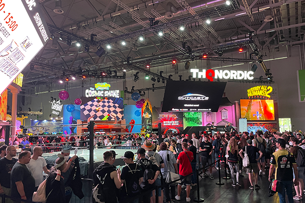
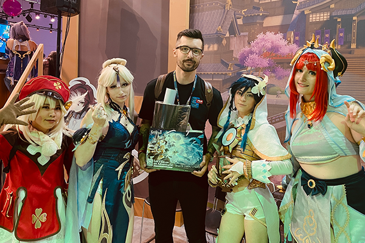

Gamescom - The Biggest Gaming Fair in Europe, Cologne ▮▪
In today’s article, we’ll talk about the biggest gaming fair in Europe. Gamescom is held annually in Cologne, Germany, and is extremely popular among gamers. Unlike E3, this event is more focused on the gaming community. Even though the last edition of E3 was also open to the public, it just didn’t have the same magic as this traditional event. Perhaps that’s one of the reasons why we’ll no longer see another E3 in Los Angeles.
I’ve attended Gamescom six times already, and each time it has been an incredible experience. Every year, this event offers a unique opportunity for anyone who loves games and virtual worlds to experience something special. Gamers from all around the world gather here, and the atmosphere is simply perfect. I still remember my very first year my friends and I drove there by car, not knowing what to expect. The line outside, which I remember vividly to this day, was enormous. Compared to later years, when I had media or retail access and didn’t have to wait in line, that first year was a true test of patience.
If you’ve never been to this event but are considering attending this year’s edition, you’re probably wondering what to expect. You can look forward to massive halls open to everyone. There’s also a business area accessible only with accreditation, but even for regular visitors, there are countless opportunities. You can try out upcoming games, take photos with cosplayers, buy merchandise from your favorite game studios, and chat with gamers from all over the world.
One of the downsides is that if you want to try a highly anticipated game, you might end up waiting in line for several hours. The reward for your patience, however, often includes small gifts like t-shirts, stickers, keychains, or figurines. Each studio has its own marketing strategy, and some are incredibly generous with their giveaways. I remember one studio handing out graphics cards by literally throwing them into the crowd. Pretty intense like a real-life round of Hunger Games!

With accreditation, you can skip the lines by scheduling appointments in advance. For example, after visiting the Genshin Impact booth, I received a press kit and had the opportunity to chat with one of the developers. There were also official cosplayers from the game on site, and their costumes were absolutely breathtaking. Each costume represents countless hours of work and dedication hats off to everyone who puts their heart into this craft.
Gamescom isn’t just about trying out upcoming games. There’s also a massive hall filled with merchandise. One of my favorite stops every year is the Blizzard booth. As a long-time fan of Blizzard games, especially World of Warcraft, I always make sure to bring something home as a souvenir.
Every time I leave Gamescom, I realize how incredible the gaming community truly is. Gaming and esports have skyrocketed in recent years, and today the gaming industry stands among the most profitable sectors in the world, continuing to grow every year.
You might even run into your favorite streamer or YouTuber which is another amazing part of this event. Gamescom is an experience you’ll remember for the rest of your life.
See you next time,
Štefan
◀ Back to blog